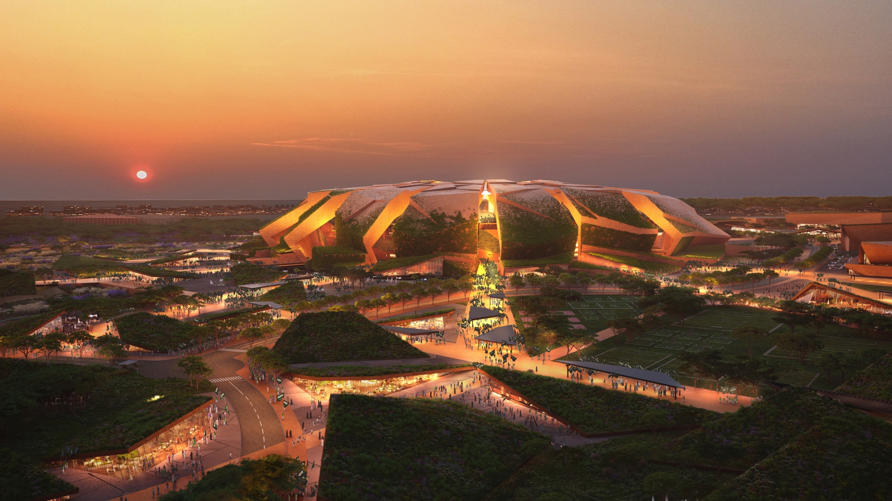
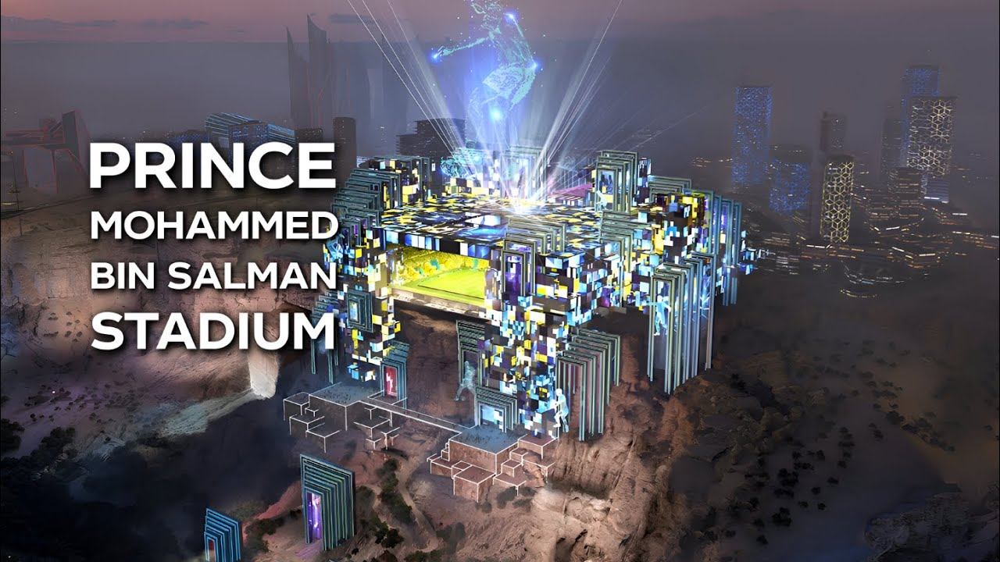

ملعب الملك سلمان
ملعب الملك سلمان الدولي هو مشروع بناء ملعب جديد في شمال مدينة الرياض، على طريق الملك سلمان وبجوار حديقة الملك عبد العزيز، ويتميز أيضًا بقربه من المواقع الحيوية في المدينة مثل مطار الملك خالد، ويتصل بمحطة قطار الرياض ومحاور الطرق الرئيسة مما يُسهّل الوصول إليه من جميع أنحاء المدينة. سيستضيف الملعب المواجهتين الافتتاحية والنهائية من كأس العالم 2034، ستبدأ أعمال البناء في عام 2025م ويُتوقع افتتاحه في الربع الأخير من عام 2029م.

ملعب الأمير محمد بن سلمان
ملعب الأمير محمد بن سلمان يُطل على سفح الجبل، وطاقته الاستيعابيّة 46,979 ألف مقعد، وسيكون ضمن الملاعب التي ستستضيف كأس العالم 2034.